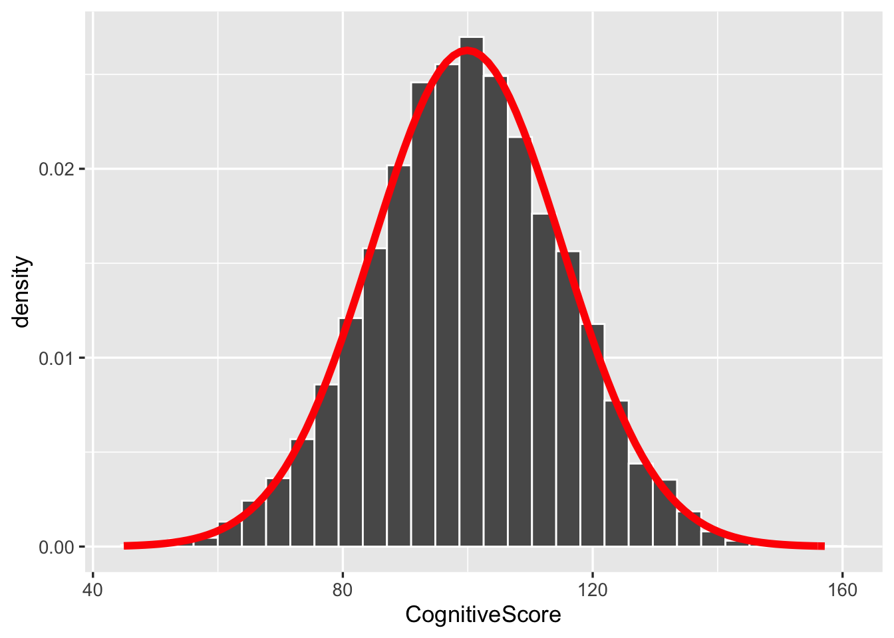
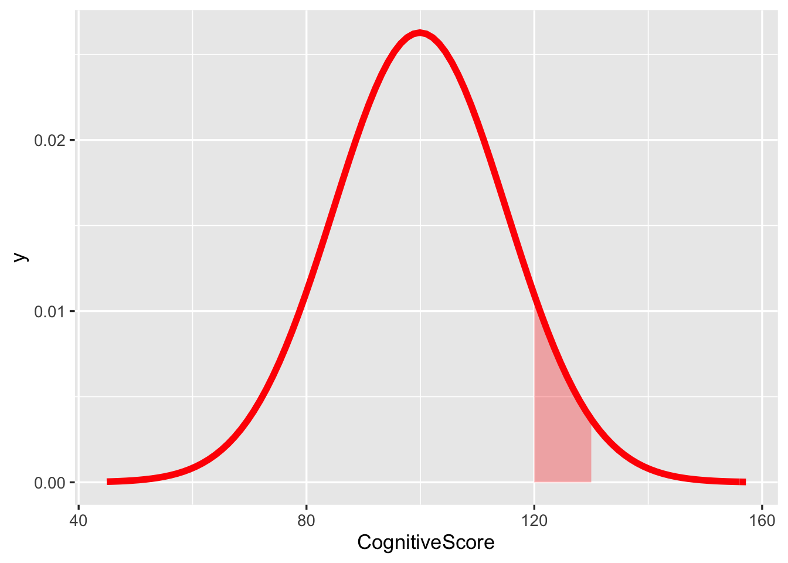
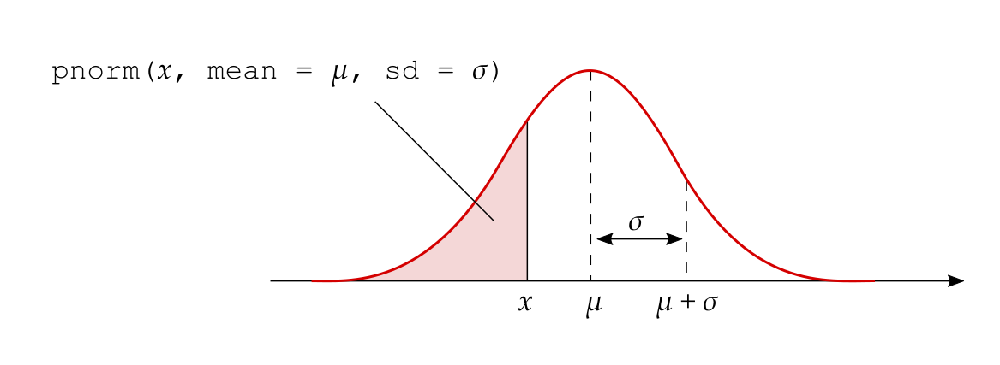
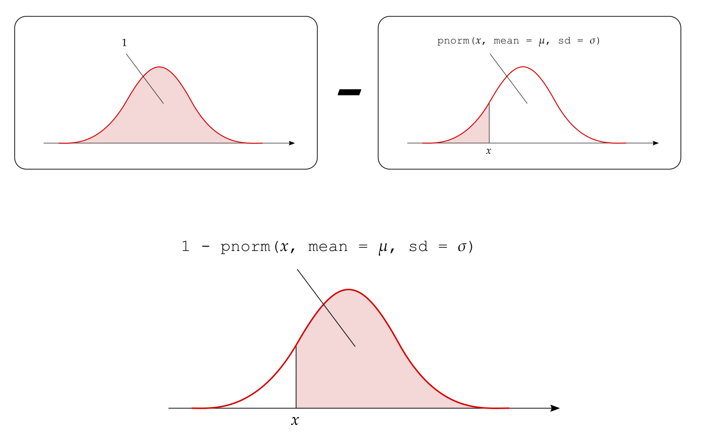

Chapter 15 Normal distribution & probability
Instructions
- In this two-hour lab we will go through worked examples in the first hour, and you will attempt to answer some questions in the second hour.
- Please attempt the lab questions as they are not just a mere copy of the walkthrough code using a different dataset. They consolidate key points that were covered in the lecture, but not in the walkthrough.
- The Rmarkdown file for this week is here.
Learning outcomes
LO1. Understand the normal distribution.
LO2. Compute probabilities using density functions.
LO3. Understand the link between simulation-based standard errors and theory-based standard errors.
15.1 Recap
Flow-chart revising how to perform hypothesis testing using the p-value method.
Flow-chart revising how to perform hypothesis testing using the critical value or rejection region method).
15.2 Walkthrough
15.2.1 From histograms to normal curves
In the past four weeks, we plotted many histograms and dotplots. These plots helped us understand the distribution of a variable or a statistic.
Distribution
The distribution of a variable shows how frequently different values of the variable occur.
The graph showing the distribution of a variable shows us where the values are centred, how the values vary, and gives some information about where a typical value might fall. It can also alert you to the presence of outliers (unexpected observations).
Pretty much all of the distributions we saw were symmetric and bell-shaped. This typically is the case when the sample size is large enough.
Figure 15.1 shows some of the distributions we plotted in the past four weeks, with a red curve superimposed on top. Note how the red curve closely approximates the histograms.
- NFL example: sampling distribution of the mean for sample size \(n = 50\);
- NFL example: sampling distribution of the mean for sample size \(n = 500\);
- Coin example: sampling distribution of the proportion of heads in \(n = 50\) tosses with probability of heads \(p = 0.3\);
- Coin example: sampling distribution of the proportion of heads in \(n = 50\) tosses with probability of heads \(p = 0.7\).
Figure 15.1: Different distributions with their corresponding normal curves shown in red.
The symmetric and bell-shaped red curve is known as the normal curve and is a mathematical model (i.e. an equation or graph) which is used to describe reality (see Figure 15.2).
Figure 15.2: Normal curve.
Normal distribution
A continuous variable is said to be a normally distributed, or to have a normal probability distribution, if its distribution has the shape of a normal curve (i.e. it is symmetric and bell-shaped).
Key question
How can we make sure that the normal curve can adapt to any symmetric and bell-shaped histogram?
Every histogram can be centred at a different value and have a different spread.
We can specify the normal curve appropriate for each histogram by specifying
- where it should be centred at,
- and what should its spread be.
Hence, the normal curve depends on two quantities called the parameters of the normal distribution (see Figure 15.3):
- the mean \(\mu\), specifying the centre of the distribution;
- the standard deviation \(\sigma\), specifying the spread of the distribution.
## Warning: `mapping` is not used by stat_function()
## Warning: `mapping` is not used by stat_function()
## Warning: `mapping` is not used by stat_function()
## Warning: `mapping` is not used by stat_function()Figure 15.3: Normal curves for different means and standard deviations.
► Question
What happens when we vary the mean and the standard deviation parameters?
► Solution
Notation
We will write that a random variable \(X\) follows a normal distribution with mean \(\mu\) and standard deviation \(\sigma\) as: \[X \sim N(\mu, \sigma)\]
15.2.2 The relation between area and probability
Consider panel (a) in Figure 15.1. Each bar in the histogram shows the proportion of all the generated statistics falling in a given interval. For example, the proportion of sample means between 2.2 and 2.3 is equal to 0.09.
This proportion can be interpreted as a probability. So, the proportion of means between 2.2 and 2.3 has two possible interpretations:
- the proportion of all samples with a mean between 2.2 and 2.3 is 9%;
- there is a 9% probability that a randomly selected sample from the population has a mean between 2.2 and 2.3.
We will now discuss the uniform distribution to understand the relation between area and probability.
Suppose that you are performing an experiment to study the time until loss of attention. You are currently monitoring a subject from a starting point, coded as time = 0, until up to 30 minutes later.
The subject is equally likely to lose attention at any point across the 30 minutes. They are equally likely to lose attention after 3-4 minutes as they are likely after 25-26 minutes, or after 6-10 minutes as they are after 20-24 minutes.
More generally, the subject is equally likely to lose attention in intervals of time that have the same length. Such a random variable is said to follow a uniform distribution.
For discrete random variables, i.e. random variables whose possible values are only whole numbers without decimals, we compute probabilities as the number of favourable cases divided by the total number of possibilities.
The probability of seeing an even face when throwing a die is obtained by dividing the number of ways the event “even face” can occur (three even faces in a die: ⚁, ⚃, ⚅) by the total number of possibilities (six total faces in a die: ⚀, ⚁, ⚂, ⚃, ⚄, ⚅): \[ P(\textrm{even face}) = \frac{n_\textrm{even faces}}{n_\textrm{faces}} = \frac{3}{6} = 0.5 \]
► Question
Think about continuous random variables, such as time until loss of attention or reaction times. For continuous random variables, can we compute probabilities in the same way?
► Solution
Key point
For continuous random variables, we can only compute the probability of intervals of values.
In order to find probabilities for continuous random variables, we use probability density functions.
Probability density function
A probability density function is an equation used to compute the probabilities for continuous random variables.
It must satisfy the following properties:
- the total area under the graph of the equation must be equal to one, equivalent to the fact that the total probability must be one;
- the graph of the equation must be greater than or equal to zero for all possible values.
For discrete random variables, property 1 is similar to saying that the sum of all probabilities must be equal to 100%. Property 2 is similar to saying that probabilities can not be negative.

Figure 15.4: Uniform distribution between 0 and 30 minutes.
Figure 15.4 shows the uniform distribution for the loss of attention example. Let’s analyse it in more detail. Each value between 0 and 30 minutes is equally likely, so the graph is a rectangle. The width of the rectangle is 30 as the possible values of the random variable are 0 to 30. Property 1 of density functions states that the total area under the graph must be 1. We will use this relationship to find what the height of the rectangle should be.
Recalling that the area of a rectangle is given by the width times height,
\[ \begin{aligned} a &= w \times h \\ 1 &= 30 \times h \end{aligned} \]
we find that the density is given by the height: \[ h = \frac{1}{30} = \textrm{density} \]
How can we use this density function to calculate probabilities?
In order to find the probability of your subject losing attention between 10 and 20 minutes after the start of the experiment, we must calculate the shaded area in Figure 15.5.
The width of the shaded region is \(20-10 = 10\). The height of the shaded region is \(1/30\). The area between 10 and 20 is \(10 \times \frac{1}{30} = \frac{1}{3}\).
So, the probability of the subject losing attention between 10 and 20 minutes from the beginning of the study is \(1/3\).

Figure 15.5: Probability of losing attention after 10 to 20 minutes.
► Question
How would you calculate the probability of the subject losing focus either in the first 10 minutes or the last 10 minutes? In other words, between 0-10 minutes and 20-30 minutes?
► Solution
We have introduced the uniform distribution to link the concepts of probability and area under a curve.
Now, strong in what we have learned, we will move towards a more widely used model for continuous random variables: the normal distribution, which we have previously introduced.
15.2.3 Probabilities for normally distributed random variables
We used a rectangle to find the probability of a uniformly distributed variable being in a given range. However, only a few continuous random variables follow such a graph.
More common is to see random variables whose distribution is symmetric and bell-shaped. This is the case for aptitude-test scores, the birth weights of newborns, and so on… We previously learned that if a random variable has a histogram which is symmetric and bell-shaped, we say that the variable follows a normal distribution.
Consider the following sample of 10,000 people, for which we have recorded their score on a cognitive test.
Let’s load the data and inspect them:
library(tidyverse)
# Load the sample
cognitive <- read_csv('https://edin.ac/39jPFa5', col_names = TRUE)
# Display the first six rows
head(cognitive)## # A tibble: 6 x 2
## SubjectID CognitiveScore
## <dbl> <dbl>
## 1 1 90.6
## 2 2 103.
## 3 3 87.5
## 4 4 124.
## 5 5 105.
## 6 6 87.7## [1] 10000 2We have 10,000 rows (subjects) and two columns (measured variables).
Let’s plot the distribution of the variable of interest, CognitiveScore, as a histogram.
However, on the y-axis, instead of the absolute counts of the values we ask for the density or proportion.
This makes it easier to compare across samples of different sizes, as the range of the y-axis won’t change with the sample size.
We plot the density by specifying y = stat(density) in the aes() function:

We can see that the distribution of cognitive scores is symmetric, centres approximately around 100, and is bell-shaped. We can therefore try to fit a normal curve to it.
We must specify:
- where the normal curve should be centred at. This should be the centre of the histogram/data;
- how spread out or narrow the normal curve should be. This should be the spread of the histogram, i.e. the standard deviation of the data.
Centre:
## [1] 99.9019Spread:
## [1] 15.18534Hence the normal curve should be centred at the mean of the data, 99.9 and have standard deviation 15.19.
The equation of the normal density curve is provided by the following function:
where:
xrepresents the value of the random variablemeanthe mean of the normal curvesdthe standard deviation of the curve
Let’s add the red curve on top of the histogram using stat_function(). It takes as arguments:
fun: the function to plotargs: parameters of the function to be plotted- plotting specifications
ggplot(cognitive) +
geom_histogram(aes(x = CognitiveScore, y = stat(density)), color = 'white') +
stat_function(fun = dnorm,
args = list(mean = sample_mean, sd = sample_sd),
color = 'red', size = 2)
We can now calculate the probability that a randomly selected individual has a cognitive score between 120 and 130 as the area under the normal curve between 120 and 130:

We compute areas for normal curves using the function pnorm(x, mean, sd).
This function computes the area to the left of x in a normal curve centred at mean and having standard deviation sd.
1. Area to the left of a value \(x\) 
2. Area between the values \(x_l\) and \(x_u\)

3. Area to the right of \(x\) 
The probability that a randomly selected individual has a cognitive score between 120 and 130 is the area under the normal curve between 120 and 130:
theory_prob <- pnorm(130, mean = sample_mean, sd = sample_sd) -
pnorm(120, mean = sample_mean, sd = sample_sd)
theory_prob## [1] 0.06909445Let’s compare that with the proportion obtained from the histogram:
sample_prob <- cognitive %>%
summarise(prop = sum(CognitiveScore >= 120 & CognitiveScore <= 130) / n())
sample_prob## # A tibble: 1 x 1
## prop
## <dbl>
## 1 0.0705As we can see the theoretical probability and the sample estimate, rounded to two decimal places, are similar:
| Simulation-based | Theory-based |
|---|---|
| 0.07 | 0.07 |
There is a 7% chance that a randomly selected individual from the population has a cognitive score between 120 and 130.
To summarise, the calculation of probabilities for normally distributed random variables follows three steps:
find the mean of the variable,
find the standard deviation of the variable,
compute the probability as the area under the normal curve with the mean found in (1) and the standard deviation found in (2).
15.2.4 Z-scores
Instead of always specifying the mean and the standard deviation of the normal curve, we can work with a reference normal curve that has mean = 0 and sd = 1. This is known as the standard normal distribution.
Standard normal distribution
A standard normal distribution, denoted \(N(0, 1)\), is a normal distribution with mean = 0 and sd = 1.
The functions dnorm and pnorm assume that the mean = 0 and the sd = 1 if not provided, i.e. they assume a standard normal distribution by default.
In order to transform a value \(x\) from a normal distribution with mean = \(\mu\) and sd = \(\sigma\) to a score on the standard normal scale, we must use the z-score transformation: \[ z = \frac{x - \mu}{\sigma} \]
Let’s compute again the probability that a randomly selected individual has a cognitive score between 120 and 130 using a standard normal distribution.
First, we must convert the values to z-scores by subtracting the mean and the standard deviation of the distribution. Then we use the function pnorm():
z_u <- (130 - sample_mean) / sample_sd
z_l <- (120 - sample_mean) / sample_sd
pnorm(z_u) - pnorm(z_l)## [1] 0.06909445There is a 7% chance that a randomly selected individual from the population has a cognitive score between 120 and 130.
As you can see, this is exactly the same value we found before with the shifted and scaled normal distribution.
15.3 Summary
When a histogram shows that a variable’s distribution is symmetric and bell-shaped, we can say that the variable is normally distributed and we can model the distribution with a mathematical curve called the normal probability distribution.
We saw that the normal distribution depends on two parameters that control the centre and spread of the normal curve:
- the mean;
- the standard deviation.
These two parameters let the normal curve model histograms that have different centres and different spreads.
In R, the equation of the normal density curve is given by the function dnorm(x, mean, sd).
We can use the normal curve to compute the probability of intervals as the area under the curve in that interval.
The function to compute the area under a normal curve to the left of x is pnorm(x, mean, sd).
| Probability | R command |
|---|---|
Probability of observing a value less than or equal x |
pnorm(x, mean, sd) |
Probability of observing a value between xl and xu |
pnorm(xu, mean, sd) - pnorm(xl, mean, sd) |
Probability of observing a value greater than xu |
1 - pnorm(xu, mean, sd) |
15.4 Lab
In today’s lab we will fit a normal curve to the sampling distribution of the mean using the NFL example introduced in Week 11.
Consider again the dataset with the yearly salaries of National Football League (NFL) players. We are interested in the average yearly salary of a NFL player.
We have data on 2,099 players: their name, position, team they played for, total money while on a NFL payroll, and yearly salary.
Since we are only interested in the yearly salary, we can select the relevant columns:
# Step 1: load the required libraries
library(tidyverse)
library(moderndive)
# Step 2: load the data and select the columns of interest
nfl <- read_tsv('https://edin.ac/2TexAFA')
# Step 3: look at the first rows of the data
head(nfl)## # A tibble: 6 x 5
## Player Position Team TotalMoney YearlySalary
## <chr> <chr> <chr> <dbl> <dbl>
## 1 Aaron Rodgers QB Packers 110 22
## 2 Russell Wilson QB Seahawks 87.6 21.9
## 3 Ben Roethlisberger QB Steelers 87.4 21.8
## 4 Philip Rivers QB Chargers 83.2 20.8
## 5 Cam Newton QB Panthers 104. 20.8
## 6 Matt Ryan QB Falcons 104. 20.8## [1] 2099 5► Question 1
Compute the sampling distribution of the mean using 10,000 samples of 100 players each.
Display the sampling distribution using a density histogram.
Hint. Remember to use y = stat(density) inside the function aes().
► Solution
► Question 2
Does the sampling distribution of the mean for samples of size 100 follow a normal curve?
► Solution
► Question 3
Find the normal probability density function that models the sampling distribution of the mean for samples of size \(n = 100\).
Plot the normal curve in red on top of the histogram.
► Solution
► Question 4
What are the population mean and standard deviation?
► Solution
► Question 5
What are the mean and the standard deviation of the sampling distribution of the mean?
Reminder: Remember that the standard deviation of the sampling distribution of the mean is also known as the standard error (SE) of the mean.
► Solution
► Question 6
What is the relation between the population mean and the mean of the sampling distribution?
► Solution
► Question 7
Do you notice any relation between the population standard deviation and the standard error of the mean?
Hint. If the population standard deviation is \(\sigma\), the sampling distribution of the mean should have standard deviation \(\frac{\sigma}{\sqrt{n}}\), where \(n\) is the sample size.
► Solution
► Question 8
Comparison of the simulation-based and theory-based sampling distribution of the mean.
Write down on paper the table below and fill the ? with the mean and the standard error computed using the simulation-based approach and the theory-based approach.
The sampling distribution of the mean is a normal distribution with mean and standard deviation:
| Simulation-based approach | Theory-based approach | |
|---|---|---|
| Mean | ? | \(\mu =\) ? |
| SE | ? | \(\frac{\sigma}{\sqrt{n}} =\) ? |
► Solution
This is an important result. It means that, in order to show the sampling distribution of the mean, we would just:
- load the data,
- find the population mean \(\mu\),
- find the population sd \(\sigma\),
- plot a normal curve with mean = \(\mu\) and sd = \(\frac{\sigma}{\sqrt{n}}\).
This avoids us the burden of:
- repeatedly sampling from the population;
- calculating the sample mean for each sample;
- plotting the histogram of the sample means.
► Question 9
The lengths of human pregnancies are normally distributed with mean \(\mu = 266\) days and standard deviation \(\sigma = 16\) days.
Plot the normal curve representing the length of human pregnancies.
Hint: This requires the following steps:
- Find the population mean and standard deviation.
- Create a grid of values for the length of pregnancy variable. Recall from Week 12 that 99.7% of all values lie between the mean plus or minus three standard deviations. To be sure to capture all of the values, use the mean plus or minus four standard deviations as limits.
- Compute the normal curve for the grid of values in (2).
- Plot using
geom_line().
► Solution
► Question 10
What is the proportion of the population with length of pregnancy greater than 280 days?
► Solution
► Question 11
What is the proportion of the population with length of pregnancy between 230 and 260 days?
► Solution
► Question 12
Using the theory-based approach, write down:
- the mean of the sampling distribution of the average length of pregnancy using samples of size 50;
- the standard error of the mean.
Plot the sampling distribution of the mean for samples of size 50.
Hint: Remember to create a grid of values going from mean - 4 * SE to mean + 4 * SE.
► Solution
15.5 Glossary
- Normal curve. A density curve used to model symmetric and bell-shaped distributions of continuous random variables.
- Distribution of the sample mean. The sample mean is a random variable which is normally distributed. Its mean is \(\mu\) and its standard deviation (standard error of the mean) is \(\frac{\sigma}{\sqrt{n}}\).
- Simulation-based SE of the mean. The standard deviation of the sampling distribution of the mean, obtained by generating many random samples and calculating the mean for each sample.
- Theory-based SE of the mean. For a population with mean \(\mu\) and standard deviation \(\sigma\), the SE of the mean computed on samples of size \(n\) is \(SE(\bar{x}) = \frac{\sigma}{\sqrt{n}}\).
- Z-score. The transformation \(\frac{x - \mu}{\sigma}\). It translates a value from a \(N(\mu, \sigma)\) scale to a \(N(0,1)\) scale.